QuestLine Pro in the Ember Road demo — every frame is
the real product, nothing staged.
The fifteen frames below walk through the package: the home
window, one-click setup, the tree editor, branching gates, the
Inspector, the Ember Road demo running, the quest log, and platform
sync. Each frame is captioned with what it shows; the
Quick Start tours the same features
step by step.
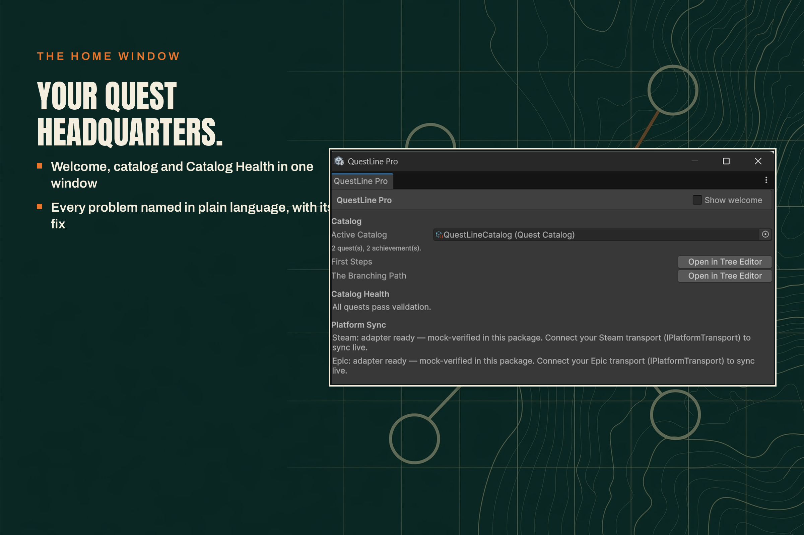
Your quest headquarters: welcome, catalog and Catalog Health in one window.
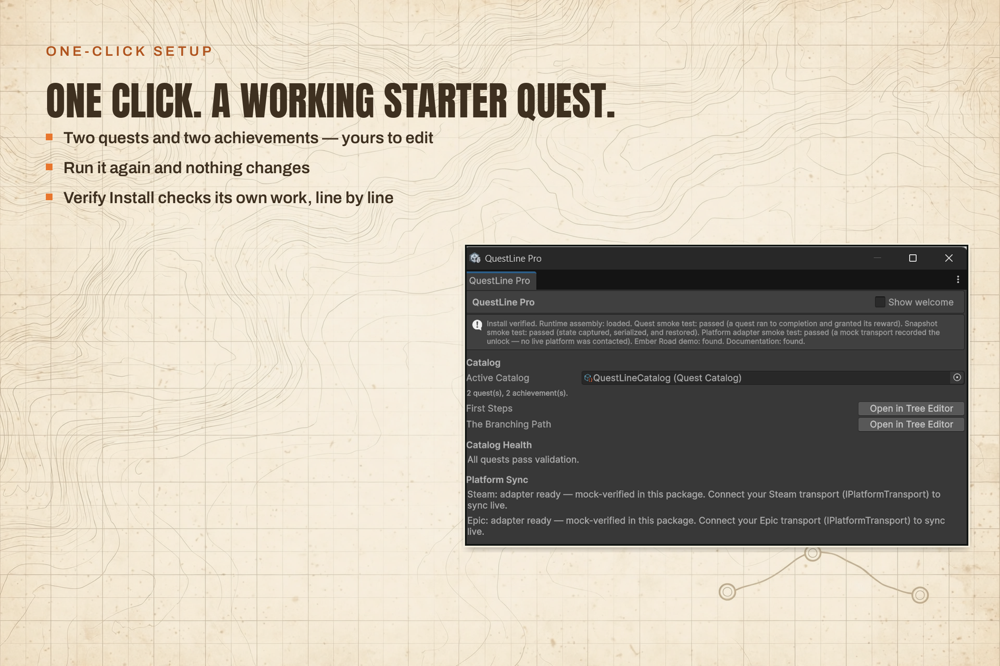
One click. A working starter quest — Verify Install checks its own work, line by line.
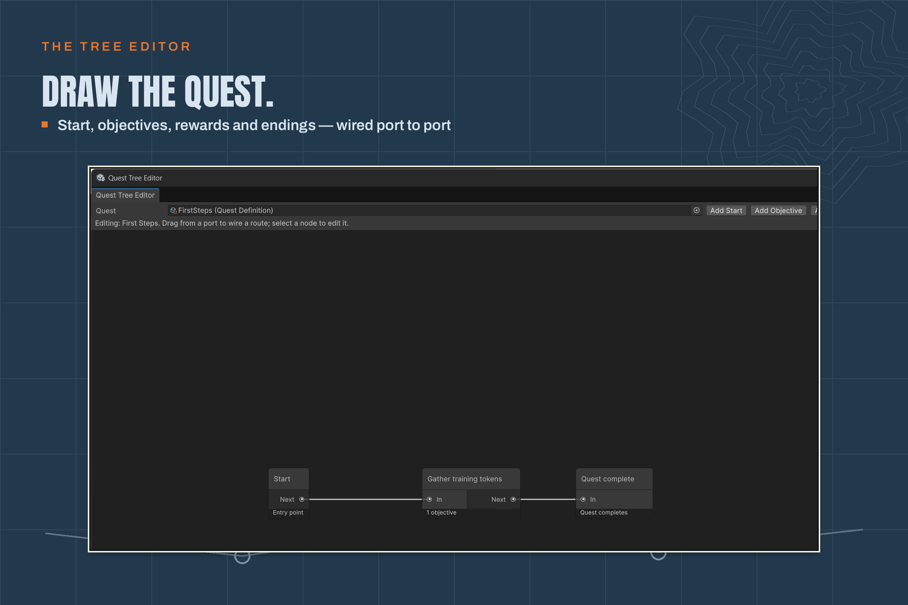
Draw the quest: Start, objectives, rewards and endings, wired port to port.
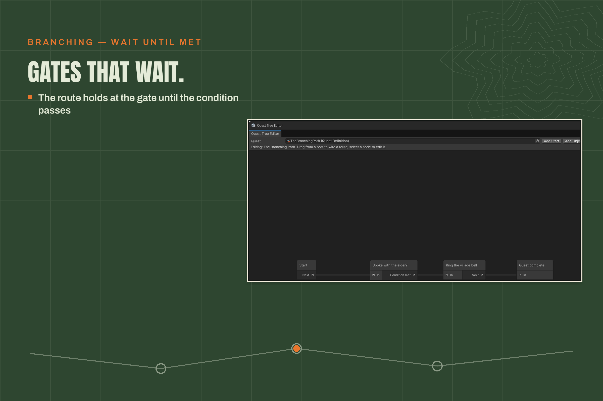
Gates that wait: the route holds at the gate until the condition passes.
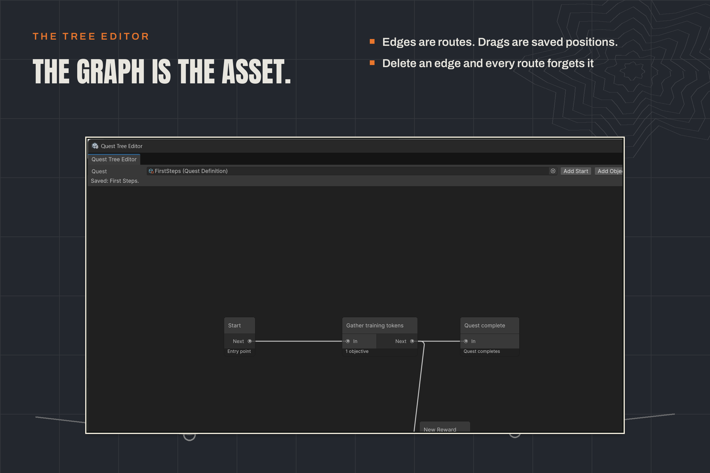
The graph is the asset: edges are routes, drags are saved positions.
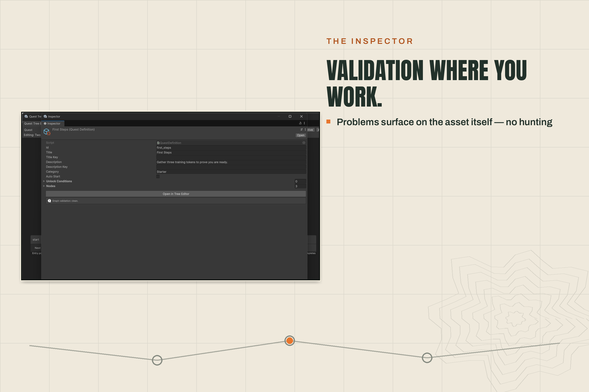
Validation where you work: problems surface on the asset itself — no hunting.
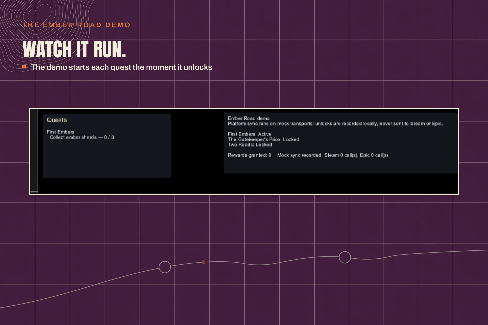
Watch it run: the demo starts each quest the moment it unlocks.
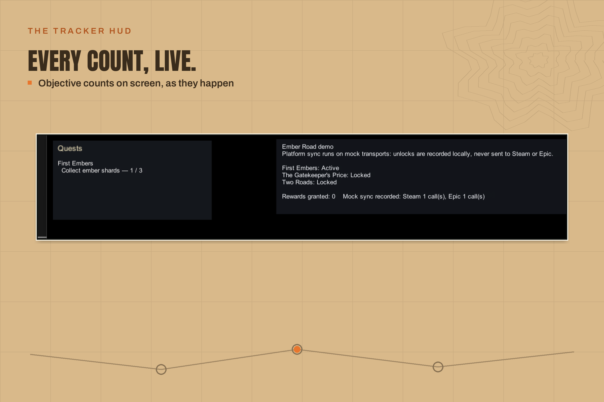
Every count, live: objective counts on screen, as they happen.
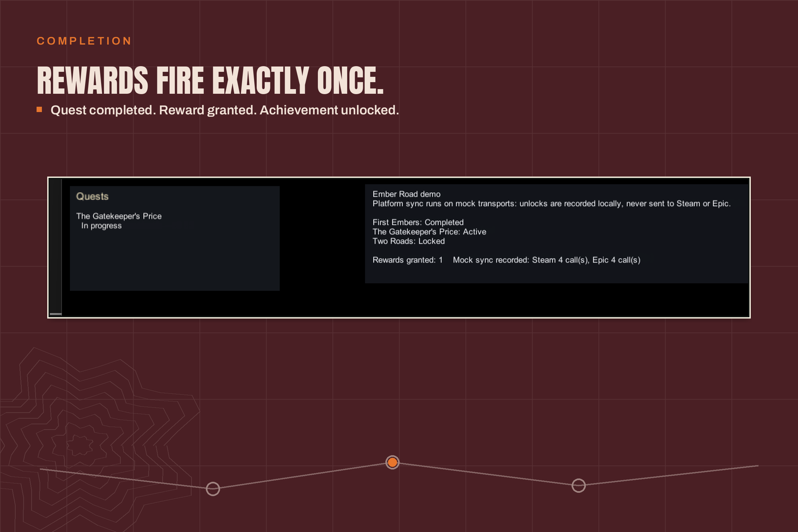
Rewards fire exactly once: quest completed, reward granted, achievement unlocked.
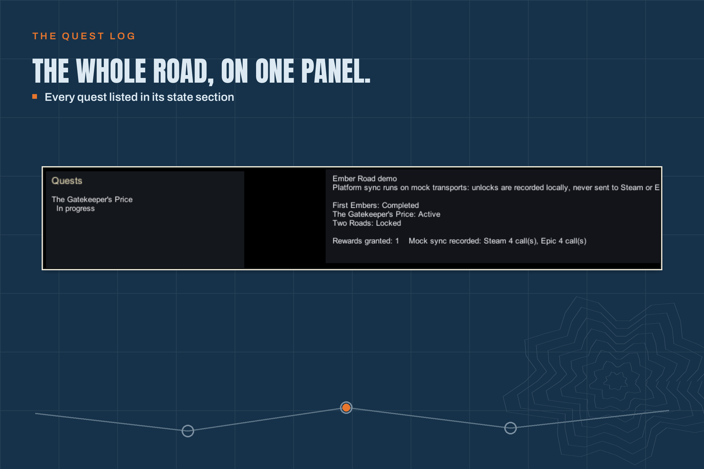
The whole road, on one panel: every quest listed in its state section.
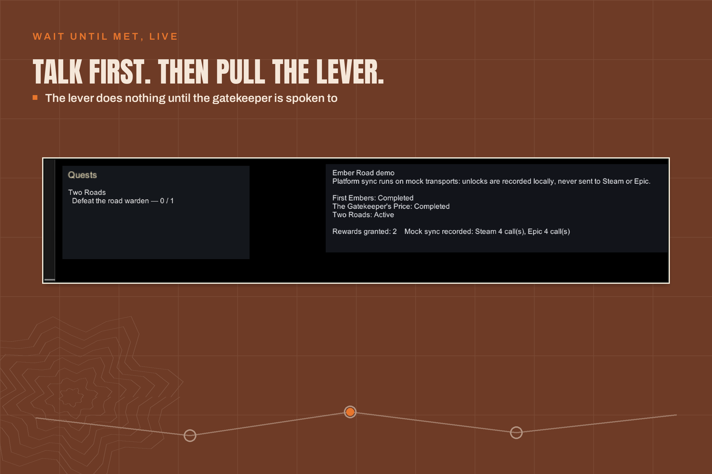
Talk first. Then pull the lever: the lever does nothing until the gatekeeper is spoken to.
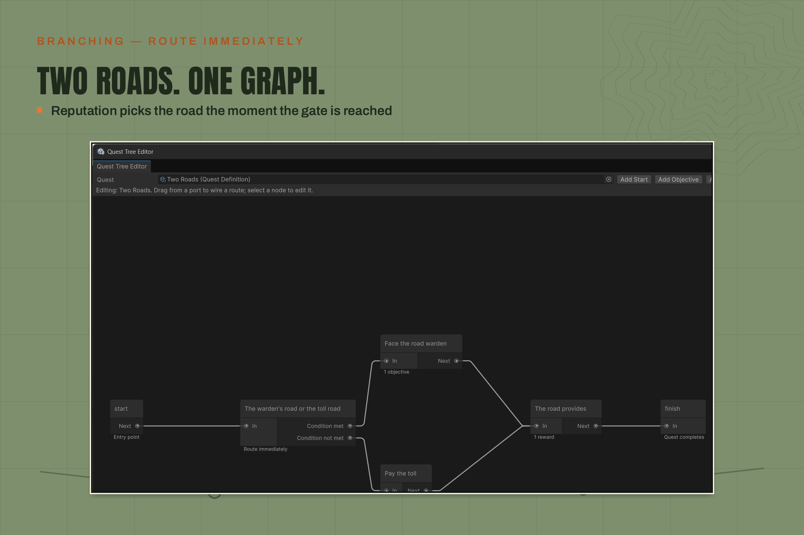
Two roads. One graph: reputation picks the road the moment the gate is reached.
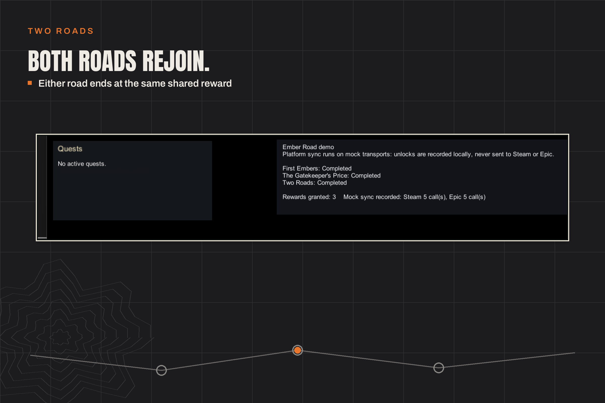
Both roads rejoin: either road ends at the same shared reward.
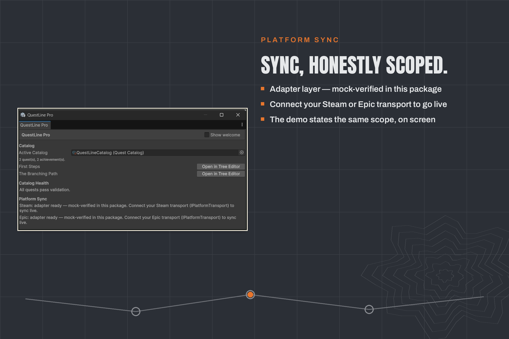
Sync, honestly scoped: the adapter layer is mock-verified in this package — connect your Steam or Epic transport to go live.
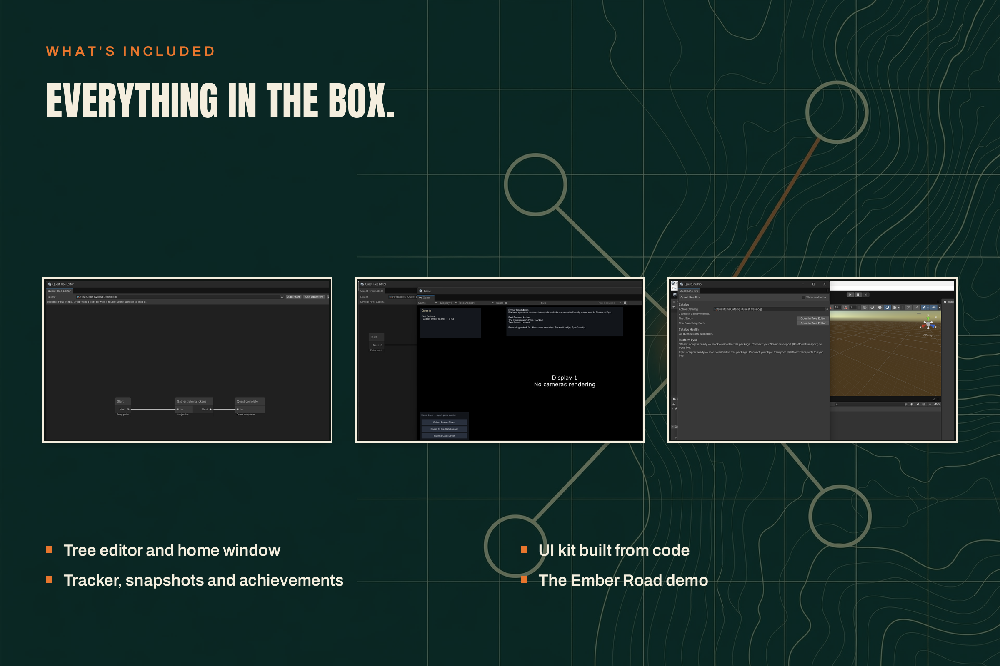
Everything in the box: tree editor and home window, tracker, snapshots and achievements, UI kit built from code, the Ember Road demo.